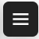
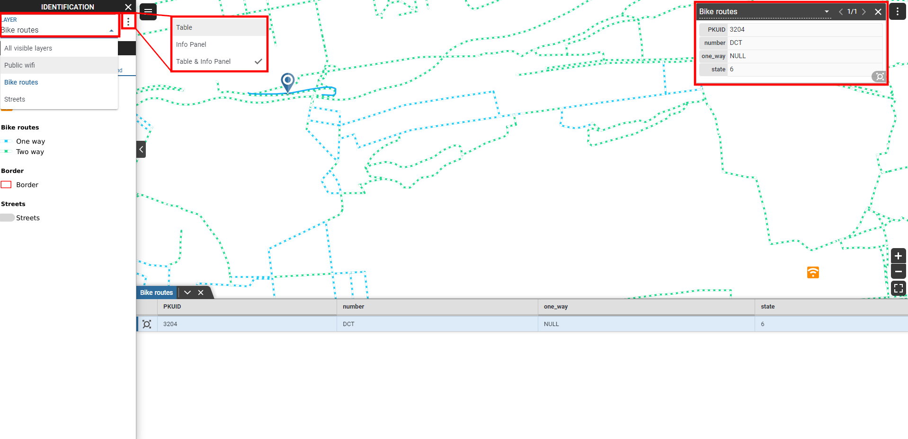

User interface¶
The Gisquick clients are designed with a goal to put together a minimal set of functions for useful generic responsive web and mobile-friendly mapping application.
The major part of the client’s User Interface (UI) is occupied by map canvas (1). Content management tools (2) are located on the left side and can be hidden using the button on its right side (3). Corners of map canvas are filled up (clockwise from the bottom-left corner) with map scale (4), tools (5), user menu (6) and zoom tools (7). The status bar is located in the bottom part and it shows current scale, projection and map coordinates of the cursor (8).

Gisquick user interface description.
Web map¶
Content management¶
Content management widget is split into three major tabs:
Base Layers tab allows switching base layers in the map canvas. The list of base layers is defined by the publication process.
Overlay Layers tab allows switching among topics (layer groups), or controlling overlay layers one by one.
Legend tab depicts currently selected layers in Layers tab.

Tip
 In the tab, you can set the opacity of the base layer or the overlay layer.
In the tab, you can set the opacity of the base layer or the overlay layer.
In the Layers mode, attribute data can be accessed by  .
The attribute table is displayed in the bottom part.
.
The attribute table is displayed in the bottom part.
Possible operations with attribute table:
Filter data - by clicking on icon next to attribute name
Pan to feature - by clicking on
 icon
iconOpen pop up window with feature info - by clicking on
 icon
iconExport attribute table - by clicking on Export button

Layer attribute table.
Tools¶
The tools located in the lower right corner of map canvas, can be used for:
Zoom in/out

Zoom to project extent

The tools situated at the top-left corner of the map canvas (accessed by ), can be used for:


{kind=link}
{kind=link}
Indentify tool allows to, by default, identify features in all visible layers. Settings can be changed in the Identification combo box.
{kind=link}
Measurement tool allows to measure:
Coordinates (Location) in two different coordinate systems (the project one or WGS-84).
Distance between two or more points in international (m, km) or imperial units (yd, mi).
Area of marked polygon in international or imperial units.
{kind=link}
Note
Measurement tool completed by double click.
{kind=link}
Print tool allows to print selected layers. Note that to enable the print function, at least one print layout must be set in QGIS before the project is published on Gisquick server. User can set:
Layout size
Format
Quality
Title
{kind=link}
Note
Layers can be rotated in print function using ALT + SHIFT + dragging.

User menu¶
User menu, accessed by  in top right corner, allows to:
in top right corner, allows to:
Logout current user
Open user profile page
Enter/Leave full screen mode
Display attributions
Copy permalink
Show help

Profile page¶
User page ( in the User menu) allows managing published projects and uploading new ones.
In Projects search tab user can browse published projects including basic metadata.
A web map can be opened by clicking on its thumbnail.
By clicking on its name, one can access project settings.
New projects can be uploaded by clicking the New project button. Note that existing project will be automatically overwritten.
The remaining number of possible projects and storage usage can be observed in the lower right corner.
Logging out and changing the password is possible by clicking on the icon in the upper right corner.
{kind=link}